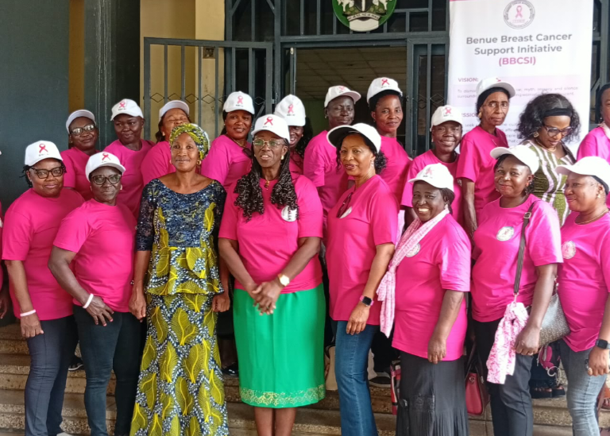

Benue Breast Cancer Support Initiative Seeks Collaboration with Benue Ministry of Women Affairs to Combat Breast Cancer
Published: · BBCSI Communications Team

MAKURDI, BENUE STATE, NIGERIA | 21 October, 2026
The Founder of the Benue Breast Cancer Support Initiative (BBCSI), Prof. (Emerita) Stevina Evuleocha-Ugbah, has led members of the organisation on a courtesy visit to the Honourable Commissioner for Women Affairs, Benue State, Hon. Mrs. Theresa Odachi Ikwue, to seek collaboration in the fight against breast cancer in the state.
During the visit to the Ministry of Women Affairs, Prof. Evuleocha-Ugbah highlighted the importance of strengthening breast cancer awareness, promoting early detection, and ensuring that women have access to relevant information, adequate funding and support services.
The Honourable Commissioner expressed her readiness to collaborate with the Benue Breast Cancer Support Initiative in advancing efforts to combat breast cancer and improve women’s health across the state.
Focus of the Proposed Collaboration
The proposed collaboration will focus on public enlightenment, community engagement, and the dissemination of accurate information about breast cancer, including:
- Its risk factors
- Warning signs
- The importance of early detection
- The need to seek prompt medical attention
Expanding Awareness Across Benue State
As part of its advocacy strategy, BBCSI also seeks to work with the Ministries of Education and Health, religious organisations, traditional rulers, and other relevant stakeholders to expand the reach of breast cancer awareness campaigns across communities in Benue State.
The initiative recognises the important roles that educational institutions, faith-based organisations, traditional institutions, and community leaders can play in educating women and the general public about breast cancer. Through these partnerships, the organisation hopes to encourage early reporting of symptoms, reduce misinformation and stigma, and promote access to appropriate healthcare services.
The Benue Breast Cancer Support Initiative remains committed to supporting women affected by breast cancer and promoting a healthier society through advocacy, education, community partnerships, and support for those in need.
The courtesy visit marks a positive step towards building stronger institutional partnerships and mobilising collective action against breast cancer in Benue State.
“Together, through awareness, collaboration, and early detection, we can make a difference in the fight against breast cancer.”
About BBCSI
The Benue Breast Cancer Support Initiative (BBCSI), under the leadership of its founder, Prof. (Emerita) Stevina Evuleocha-Ugbah, is committed to promoting breast cancer awareness, providing support, and encouraging initiatives that improve the well-being of women in Benue State.